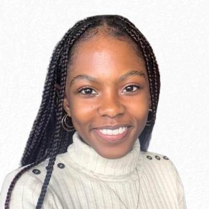

Dimpho Sefora
Aspiring Electrical and Computer Engineering
Hi and welcome! I am currently unroute to completing my Electical and Computer Engineering undergrad degree at the University of Cape Town.
I first fell in love with the flexibility of the field — one day I could be exploring ideas that touch on aerospace, another day I could be looking into biomedical technology, or even diving into networking and automation. It feels less like a straight path and more like a gateway into a plethora of exciting projects.
Over the years, my experiences and challenges have shaped this perspective, which has been the driving force in unlocking a strong passion for app development and embedded systems.
This site is just a small window into that journey, and if you enjoy it, please feel free to contact me.
Download CV
